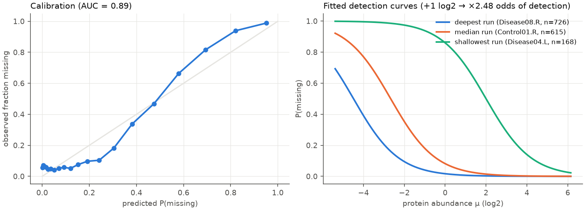
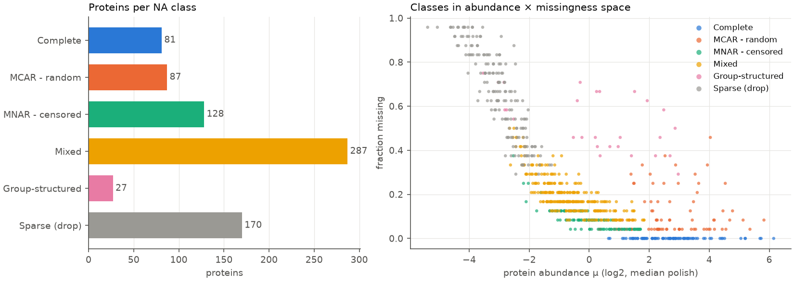
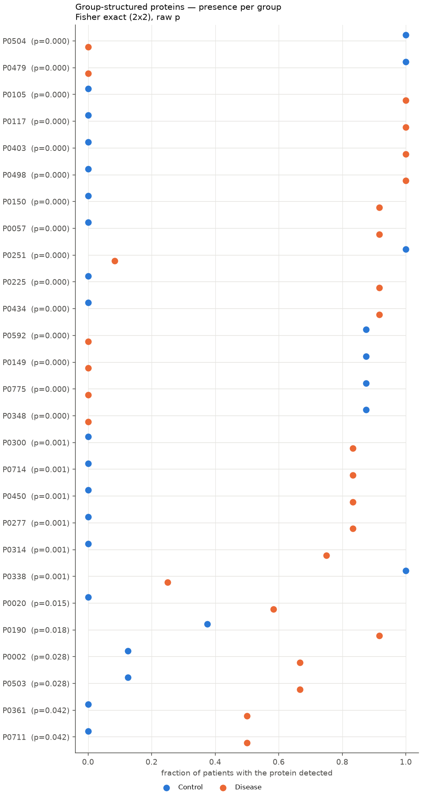
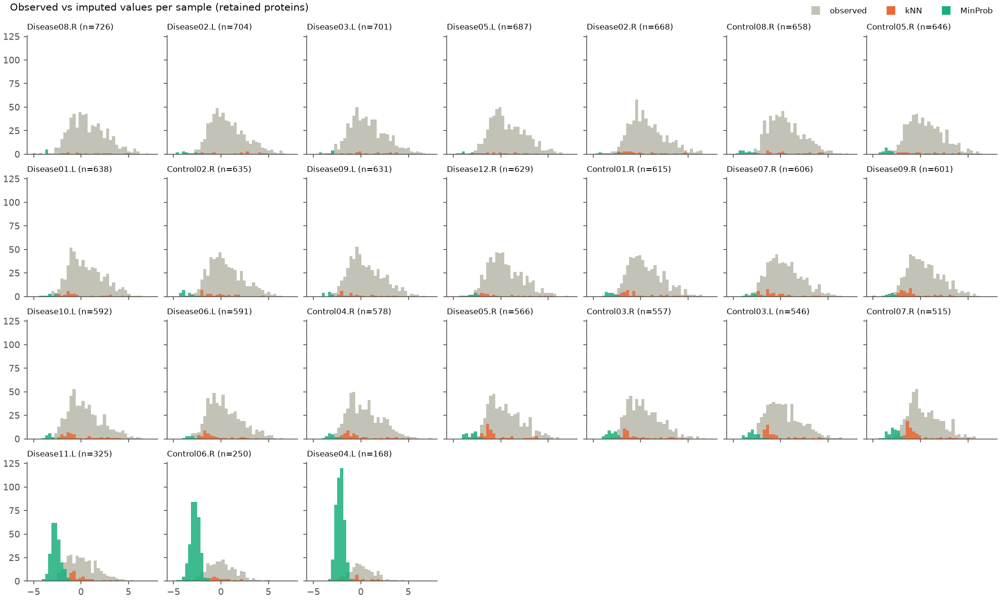

—title: Impute by mechanism, not by defaultdescription: LFQ proteomics missingness is a mixture of censoring, random dropout and biological absence. A Python module that classifies each protein’s NA profile first and lets the class choose the imputation method.categories:- Methods & Inferencedate: ’2026-09-26’draft: trueimage: cover_images/cover_na_imputation_classes.pngtitle-block-banner: cover_images/cover_na_imputation_classes.pngfig-cap-location: margin—A label-free proteomics matrix carries missing values by the tens of thousands, and the imputation step is usually one global switch: kNN or MinProb, flipped once in Perseus or in the downstream script, applied to every protein at once. The choice matters more than its one-line treatment in most pipelines suggests. kNN assumes values are missing at random and fills each gap with the distance-weighted mean of the most similar proteins; applied to a left-censored value, it fills in a typical value and erases the low end of the distribution. MinProb assumes censoring and draws from a narrow normal in each sample’s left tail; applied to an abundant protein that dropped out at random, it manufactures a fake low outlier and, across a group comparison, a fake difference. Real matrices contain both kinds of missingness, often in the same protein: censored in the shallow runs, randomly absent in a deep one. A single global method is therefore wrong for part of the data no matter which one is chosen.The taxonomy behind this goes back to Rubin (1976), who sorts missing data by how the probability of a value being missing relates to the data itself. Missing completely at random (MCAR) covers the failed spectrum match, the peptide not picked for fragmentation; missing at random (MAR) is explained by observed information such as the run’s overall depth; missing not at random (MNAR) depends on the unobserved value, which in proteomics means left-censoring below the detection limit. Censoring dominates LFQ data; the fraction of missing values falls steeply with abundance. A second practical variant of MNAR deserves separate treatment: structural or on/off absence, a protein present in one condition and absent in another, where the missingness pattern is not a nuisance to repair but the signal itself. Standard imputation blurs this pattern into low numbers.This motivated a small Python module, na-imputation, for log2 LFQ matrices that classifies each protein’s missingness profile first and lets the class choose the imputation method. Six classes cover the space: Complete (no NAs), MCAR - random (NAs where the protein should have been seen, imputed by kNN), MNAR - censored (NAs explained by low abundance or a shallow run, imputed by MinProb), Mixed (both mechanisms in one protein, decided per cell), Group-structured (on/off between groups, kept and exported as a binary presence feature), and Sparse (detected in too few patients, dropped). The interface is a single command, python na_imputation.py --lfq matrix.csv --sample-sheet samples.csv --report, plus a Python API whose building blocks can be run one at a time, for example inside a cross-validation fold.Classification rests on an explicit detection model. Median polish over the observed cells gives each protein an abundance estimate \(\mu_i\) and each sample an offset \(s_j\); a logistic regression over all cells then models the missingness probability,\[\mathrm{logit}\, P(\text{missing}_{ij}) = a_j - b\,\mu_i,\]where \(a_j\) is a per-sample intercept capturing run depth, \(b\) is the abundance slope, and \(\mu_i\) is the protein’s median-polish abundance. On the synthetic example the fit gives \(b = 0.91\), so one log2 unit of abundance multiplies the odds of detection by 2.5, with an AUC of 0.89. Every cell now has a probability \(P_{\text{missing}}\), which is exactly how strongly the censoring hypothesis expected that cell to be missing. The per-protein profile follows: the share of NAs that look censored, patient-level presence per group, a Fisher or Freeman-Halton test on the presence table, and a depth-adjusted group difference. Note that MAR and MNAR cannot be told apart from the data alone; the distinction exists here only because the model makes it explicit. The classes are therefore statements about which hypothesis explains the NAs best, not about ground truth, and the module is honest about that in its report.


The decision rules are deliberately ordered. The group screen runs before the sparsity filter, so an on/off protein with low overall detection is not thrown away by the presence filter before its pattern is recognized; this ordering matters because such proteins are precisely the ones standard filters destroy. The depth-adjusted difference must point the same way as the raw presence difference, which protects against calling a group structure that is really a run-depth artifact. On the synthetic dataset with known truth, 20 of 20 on/off proteins are calledGroup-structured, at the price of 7 false positives among 27 calls; the screen is a raw-p test by design, and with few patients per group nothing survives FDR correction, so these calls are hypotheses to check, not findings to report.
Because the synthetic dataset encodes the true mechanism behind every missing cell, the classification can be scored against it. Among retained proteins, 95% of truly random missing cells receive kNN and 75% of censored or absent cells receive MinProb; the 30 flaky abundant proteins built with 20% random dropout are classifiedMCAR - random in 27 of 30 cases. The weak point is realistic and instructive: a value censored just below the limit in a deeper run looks, to the detection model, like a random dropout, because the model expected the protein to be seen there. Those cells get kNN, a typical value where a low one was the truth. Stricter settings trade this against more MinProb fills for genuinely random NAs, and the per-cell evaluation tables make the trade-off visible rather than hiding it inside one aggregate accuracy number.
The caveats are the ones that apply to any imputation machinery, stated plainly. Do not impute the full dataset before cross-validation: the detection model, the MinProb parameters and the group screen all fit on every sample, and the group screen uses the labels, so for a classifier the steps must run inside each patient-grouped fold. Shallow runs end up mostly imputed, 72% of one run’s cells in the example, and deserve a sensitivity analysis without them. Median normalization on each sample’s own observed proteins down-shifts shallow runs, which kNN fills inherit; re-normalizing on a complete-protein common set upstream is worth considering. MinProb draws are random, so for inference the sensible protocol is multiple imputation over several seeds rather than trusting a single draw. None of these are defects of the approach; they are the same statistical hygiene the field already owes elsewhere in the pipeline.The broader point is that missing values in proteomics are not one nuisance to paper over with a global switch. They are a mixture of mechanisms, each carrying different information: censoring carries abundance information, random dropout carries none, and on/off absence carries the biology. Treating them as one thing guarantees that the imputation is wrong somewhere. Classifying first costs a median polish, a logistic regression and a few decision rules, and in return each cell is filled by the method whose assumptions it can actually satisfy, or not imputed at all when the missingness itself is the message.## References- Rubin DB (1976) Inference and missing data. Biometrika 63:581–592.- Lazar C, et al. (2016) Accounting for the multiple natures of missing values in label-free quantitative proteomics data sets to compare imputation strategies. J Proteome Res 15:1116–1125.- Tyanova S, et al. (2016) The Perseus computational platform for comprehensive analysis of (prote)omics data. Nat Methods 13:731–740.- Troyanskaya O, et al. (2001) Missing value estimation methods for DNA microarrays. Bioinformatics 17:520–525.